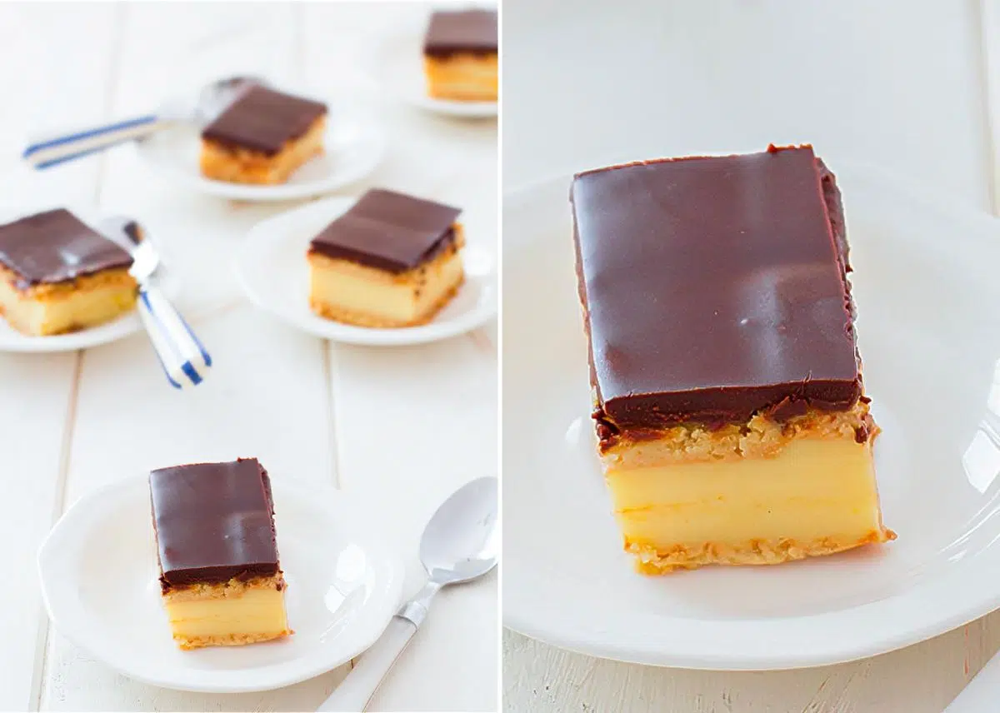
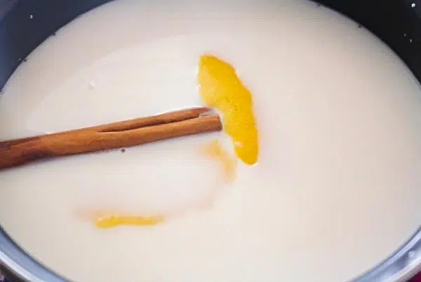
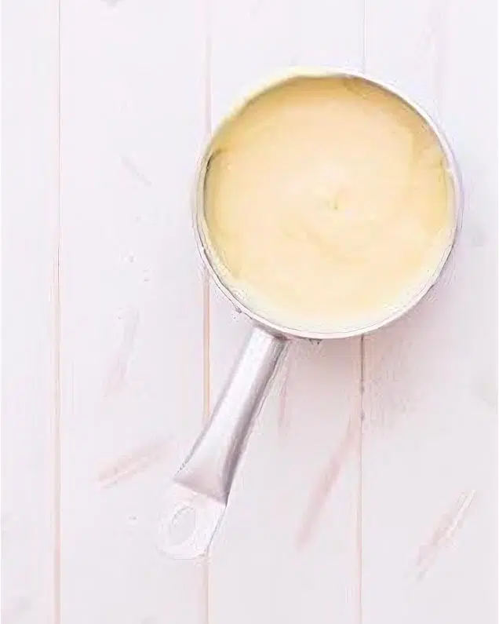
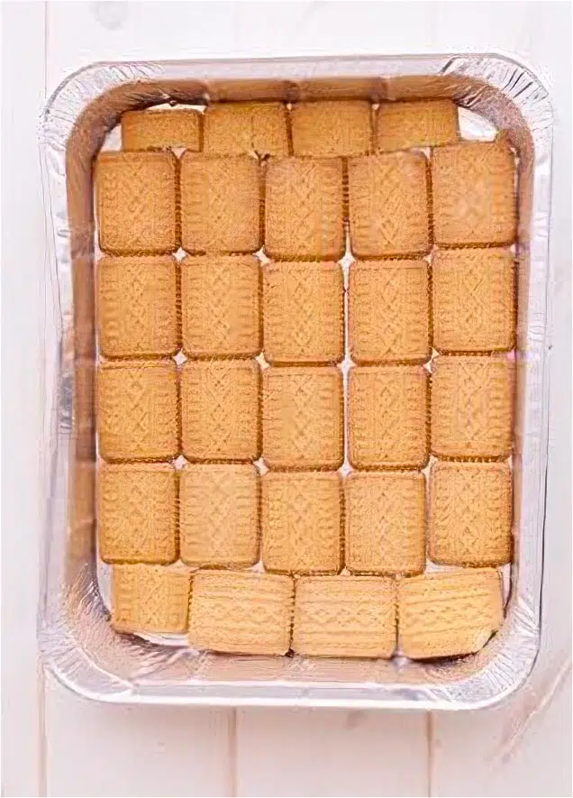
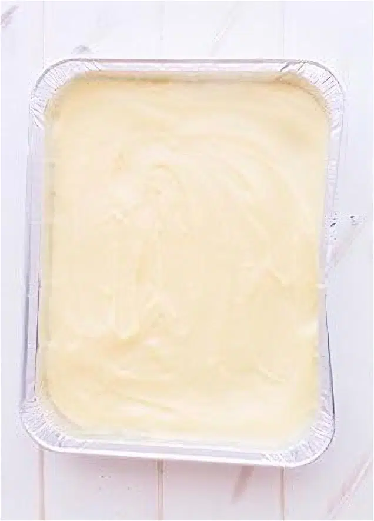
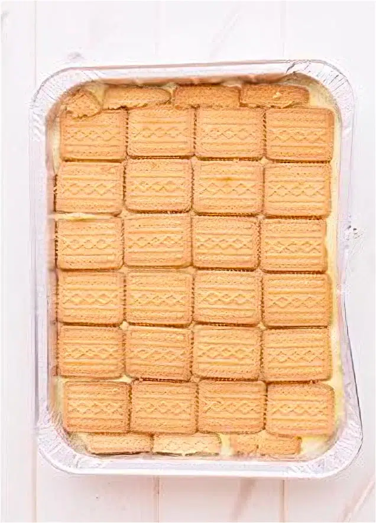
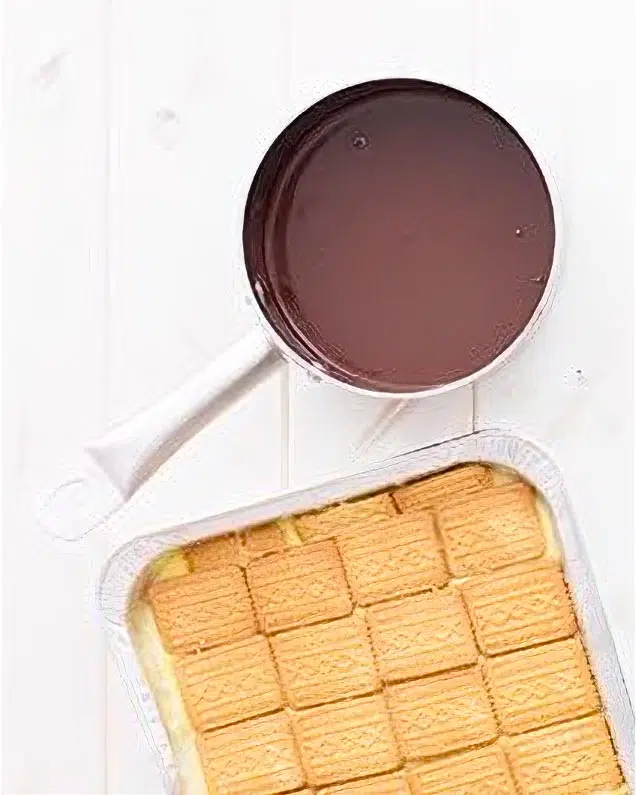
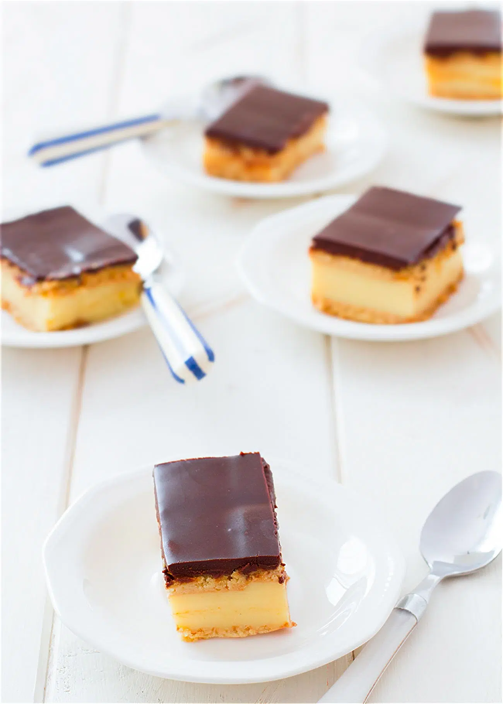

Tarta de la abuela con galletas y crema pastelera
La tarta de la abuela de galletas es una receta sencilla, poco elaborada pero sumamente deliciosa y fácil de hacer. No hay que utilizar horno, ni lleva una gran elaboración, es una tarta ideal si todavía no os habéis iniciado en el mundo de la repostería, quedaréis contentos con el resultado y os animaréis hacer muchas más tartas caseras.
Ingredientes
-
Para la crema pastelera
- 1 litro de leche entera
- 2 rama de canela
- 1 corteza de limón
- 6 yemas de huevo
- 10 cucharadas soperas de maicena
- 200 g de azúcar
- 1 cucharada de preparado de natillas (opcional)
-
Para la tarta de galletas (8-10 raciones)
- 200 g de chocolate fondant (chocolate de postre)
- 200 g de nata 35% mg (crema de leche, nata para montar)
- 50 g de mantequilla
- Leche para mojar las galletas
- 3 paquetes de galletas cuadradas (entre 200 y 250 g)
Preparación
Infusionamos la leche
Hervimos la leche (previamente retirar medio vaso), junto la canela y la piel del limón
Una vez que la leche ha hervido, la retiramos del fuego.
En otro cazo añadimos 200 g de azúcar, medio vaso de leche que teníamos reservado, maicena y la cucharada de preparado de natillas, removemos bien hasta que se diluya.
Llevamos al fuego e inmediatamente vamos añadiendo la leche aromatizada caliente poco a poco sin dejar de remover, hasta que la crema pastelera espese.
Retiramos el cazo del fuego.
Montaje de la tarta de la abuela
En un molde rectangular ponemos la primera capa de galletas, humedecemos cada galleta con un poco de leche y vamos disponiendo las galletas alineadas.
Vertemos la crema pastelera sobre la primera capa de galletas
Luego formamos de nuevo otra capa de galletas humedecidas en un poco de leche.
Cobertura de chocolate para la tarta
En un cazo ponemos la nata y el chocolate al fuego bajo y dejamos que se derrita el chocolate.
Una vez el chocolate se ha derretido, retiramos el cazo del fuego y añadimos la mantequilla, mezclamos bien, y volcamos la cobertura sobre la tarta.
enfriamos
Llevamos la tarta de la abuela a la nevera durante toda la noche o un mínimo de 4 horas; mi recomendación es que la dejéis reposar durante toda la noche en la nevera.